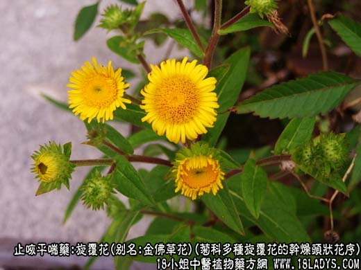
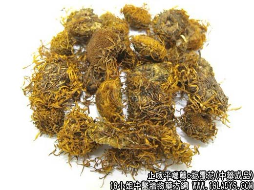
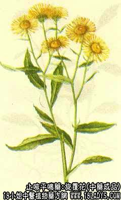

旋覆花为较常用中药，《神农本草经》列为下品。
别名：金佛草花，旋福花，复花。
来源：为菊科多年生草本植物旋覆花或线叶旋覆花等数种旋覆花的干燥头状花序，呈扁球形，直径约1.5厘米或已散碎。下具短柄，苞片多数灰绿色，平列四层于花托外围，花托半圆球形，淡黄色，上面密布凸起的小点，全体组成盘状，每一小凸点上生黄色舌状花或管状一枚。花冠多皱缩脱落，密集的瘦果顶端着生多数白色冠毛，质轻脆、易散碎。气微味苦。
以花序多数完整，黄白色，苞片灰绿色，无枝梗者为佳。
主要成分：含蒲公英甾醇、旋覆花甾醇B、旋覆花甾醇C，另含一种中性结晶物。
药理作用：止呕逆、软坚痰，其作用为镇吐、祛痰。
炮制：去净枝柄，生用或蜜制。
性味：辛、苦、咸、温。
归经：入肺、大肠经。
功能：下气、行水、消痰。
主治：咳嗽痰多，胸胁痞满、呕吐噫气。
临床应用：1、用于止呕，治由脾胃虚寒或有湿而引起的呕吐、呃逆，取其有下气作用，常配代赭石等，方如旋复代赭汤。胃肠神经官能症，有噫气、消化不良者，可用旋覆花。常配香附、党参、白术、木香、神曲、鸡内金之类，方如旋复止噫汤，或有旋复代赭汤也可。
2、用于祛痰，治痰壅气逆，顽痰胶结，咳吐不爽，胸中痞，如慢性气管炎，常配桔梗、桑白皮、半夏、瓜蒌仁等。
使用注意：阴虚燥咳、大便不泄者不宜用。
用量：3~10g，入煎剂宜包煎
处方举例：旋复止噫汤：旋覆花6g（包），香附4.5g，广木香3g（后下），党参9g，白术9g，神曲9g，鸡内金9g，水煎服。
附：金沸草为旋覆花之全草。功能下气、利水、活血，配麻黄、前胡、桔梗、荆芥等治处感咳嗽、上呼吸道炎，方如金沸草散（《局方》）。处方：金沸草9g，麻黄1.5g，前胡6g，桔梗3g，赤芍3g，法夏4.5g，荆芥9g，薄荷4.5g（后下），甘草3g，水煎服。